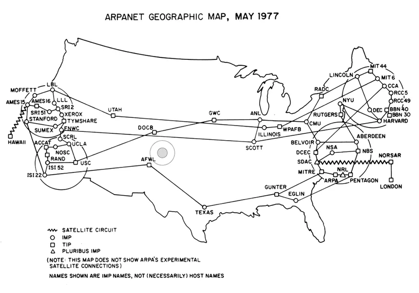

- Nascimento da Internet (anos 60-70) 
- Padronização Global
- A Criação da World Wide Web
A história da internet é inseparável do período da Guerra Fria, que ocorreu de 1947 a
1991 e foi
caracterizada pela disputa de influência e inovação tecnológica entre as superpotências, em um
cenário de profunda desconfiança mútua. Os sistemas militares de comunicação da época tinham uma
imensa vulnerabilidade, pois eram centralizados, e a perda de poucas estações poderia interromper
todo o serviço.
Em meio a essa tensão geopolítica da década de 60, o Departamento de Defesa
dos
Estados Unidos temia que um ataque pudesse comprometer suas linhas de comunicação. Essa
preocupação
foi o que fez com que a ARPA (Advanced Research Projects Agency), a fundação de
desenvolvimento de
projetos do ministério de defesa, financiasse a criação de uma rede experimental. Assim nasceu a
ARPANET em 1969, uma iniciativa que visava interconectar laboratórios de pesquisa.
Inicialmente, a
ARPANET ligou apenas quatro universidades e permitiu aos cientistas compartilhar
remotamente
informações e recursos. Este projeto não só buscou solucionar questões de segurança nacional, mas
também estabeleceu as fundações para a internet moderna.

Essa rede distribuída cresceu rapidamente. No final da década de 80, a Internet já interligava milhares de centros de pesquisa, institutos, universidades e grandes empresas em todo o mundo. Em 1985, a Internet já estava consolidada como a principal rede de comunicação com alcance global. Para garantir essa interconexão, no início dos anos 80, a ARPANET mudou seu protocolo de comunicação (NCP) para o novo TCP/IP.Até 1990, os serviços que podiam ser encontrados na rede incluíam e-mail (cartas eletrônicas), MIRC (bate-papo), Gopher (fórum de discussão em rede), e FTP (troca de arquivos entre máquinas). A rede também chegou ao Brasil em 1988, sendo liberada para uso privado e comercial em 1994.

Em 1989, Tim Berners-Lee, um físico britânico trabalhando no CERN, observou problemas na gestão do conhecimento e da informação e notou que muitas vezes a informação estava registrada, mas simplesmente não podia ser encontrada. Então, para resolver isso, ele propôs um sistema de gerenciamento de informações que utilizava hipertexto para facilitar o compartilhamento e a atualização de dados entre pesquisadores, a WEB. No ano seguinte (1990), ele desenvolveu o protocolo HTTP (para troca de informações entre cliente e servidor) e a linguagem HTML para declarar documentos, além de implementar o primeiro servidor e cliente HTTP.